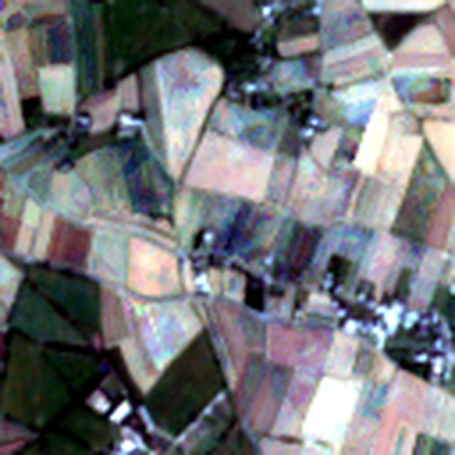
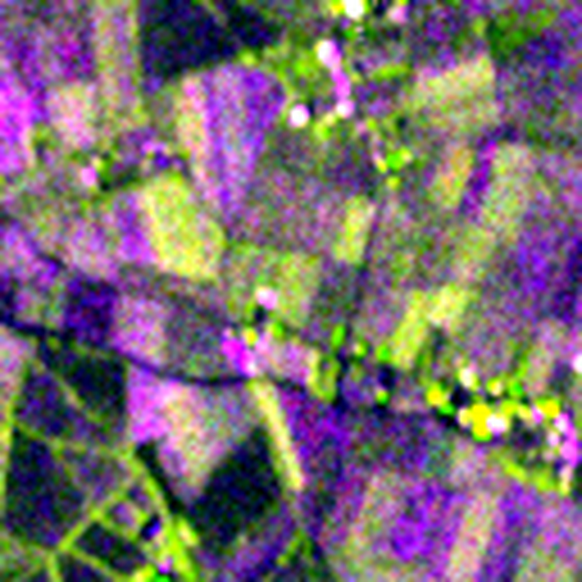
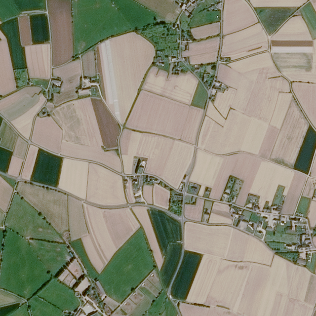
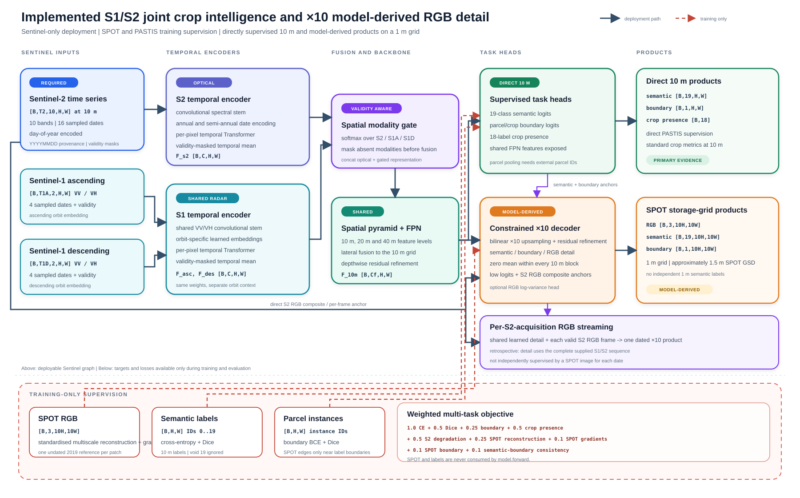
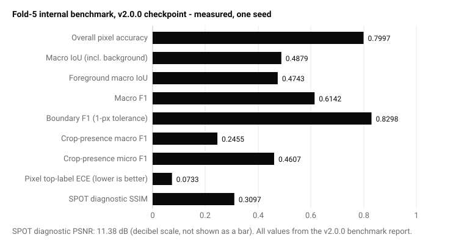
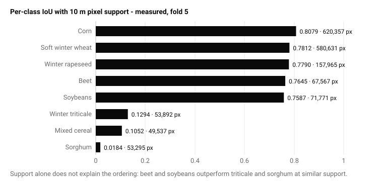

Abstract
Crop mapping from Earth-observation time series has two competing demands: temporally rich but spatially coarse inputs, and parcel-scale outputs whose apparent precision must not exceed their evidence. I describe a compact 1,947,456-parameter architecture that encodes Sentinel-2 and dual-orbit Sentinel-1 sequences, fuses valid modalities spatially, and jointly predicts 10 m crop semantics, boundaries and tile-level crop presence. A constrained decoder also produces RGB, semantic and boundary layers on a 1 m storage grid. These layers are explicitly model-derived: only 10 m semantic labels are available, and the optical reference has a ground sampling distance of approximately 1.5 m. With a single seed and on one exposed PASTIS fold, the v2.0.0 checkpoint achieved a macro IoU of 0.4879 and a boundary F1 of 0.8298, macro-averaged across patches using a one-pixel Chebyshev tolerance on the 10 m grid. In a four-patch visualisation diagnostic, the model’s high-grid RGB was effectively tied with nearest-neighbour repetition of the Sentinel-2 anchor, so no learned-detail advantage is claimed: the system’s primary measured output is the 10 m crop semantics, and the high-grid layers remain a research track. These metrics are inherited, not re-measured, by the v2.1.0 source-maintenance release. The experiment is neither a geographically held-out evaluation nor evidence of state-of-the-art performance.
1. The resolution-evidence gap
Agricultural parcels are temporal objects. Their spectral signatures evolve through sowing, growth and harvest, while clouds can obscure any single optical acquisition. Sentinel-2 provides the multispectral signal, and Sentinel-1 contributes cloud-independent radar observations. Both are informative, but the labels and core imagery in this experiment live on a 10 m grid.
The central design question is therefore not simply how to upsample. It is how to preserve a scientifically defensible relationship between direct observations and high-grid products. The system separates two claims:
- Coarse-grid supervision: 19-class semantics are labelled on the 10 m PASTIS grid; boundary targets are derived from four-neighbour parcel-instance transitions, and 18 crop-presence targets are derived from the occurrence of semantic classes 1–18.
- Model-derived detail: RGB and logits represented on a 1 m storage grid, constrained to remain consistent with their 10 m anchors.
It describes the array scale from 10 m pixels to a 1 m storage grid. It does not imply native 1 m Sentinel information, independently labelled 1 m crop classes or tenfold physical resolution.
Relation to prior work
PASTIS [2] established panoptic crop mapping from optical satellite time series with convolutional temporal attention; PASTIS-R [3] extended that setting to paired Sentinel-1 and Sentinel-2 observations. OmniSat [4] studied self-supervised fusion across Earth-observation modalities, while MAESTRO [1] introduced masked autoencoding across multimodal, multitemporal and multispectral inputs. This implementation shares the multimodal motivation but uses a compact supervised temporal-Transformer/FPN architecture. It does not load a pre-trained MAESTRO encoder, and the present experiment does not compare against these systems under a common protocol. The contribution claimed here is therefore an implemented design and evidence audit, not algorithmic novelty or state-of-the-art ranking.

S2 temporal RGB · 10 m
S1 ascending · 10 m
SPOT RGB · 1 m grid2. Data and supervision
The experiment uses 2,433 complete records from AgriSR-PASTIS, built from PASTIS, PASTIS-R and PASTIS-HD assets. The audited dataset snapshot is Khlaifiabilel/AgriSR-PASTIS revision bd796b56304f57628966f9552afc286ad47f2133; split-manifest and resolved-record hashes are retained in the benchmark report. Records are partitioned according to the standard five-fold split metadata. Folds 1–3 train the model, fold 4 selects checkpoints, and fold 5 forms the internal benchmark.
| Source | Raw shape | Role |
|---|---|---|
| Sentinel-2 | [T, 10, 128, 128] | Required temporal input; 16 dates sampled |
| Sentinel-1 ascending | [T, 3, 128, 128] | Optional radar input; VV/VH retained, 4 dates sampled |
| Sentinel-1 descending | [T, 3, 128, 128] | Optional radar input; VV/VH retained, 4 dates sampled |
| SPOT RGB | [3, 1280, 1280] | Training/evaluation target; never an inference input |
| PASTIS semantics | [128, 128] | 19 predicted classes at 10 m; void ignored |
| Parcel instances | [128, 128] | Boundary derivation and optional feature pooling |
Radiometric and temporal preprocessing
Sentinel-2 values are divided by 10,000. Sentinel-1 arrays contain VV, VH and a redundant VV−VH channel in decibels; the redundant channel is checked with a 0.25 dB consistency tolerance, then only VV and VH are retained and divided by 20. Training dates are sampled without replacement and sorted chronologically. Validation and benchmark dates are selected deterministically at approximately even temporal intervals.
Let t denote day of year. The temporal coordinate appended to each acquisition uses two seasonal frequencies:
Validity masks reject malformed or absent observations, but they are not cloud masks. The dataset does not provide cloud probability, shadow, snow or saturation layers. Spatial augmentation applies the same random horizontal flip, vertical flip and transpose to every modality and target so cross-sensor registration is not broken.
3. Architecture
Tensor contract
For batch size B and a 10 m crop of height H and width W, the optical tensor has shape [B,T2,10,H,W]. The two radar tensors have shape [B,T1,2,H,W]. The finalised configuration uses feature width C = 96, FPN width Cf = 128, two temporal Transformer layers, four attention heads, feed-forward width 4C and dropout 0.1.
Per-pixel temporal encoding
Each modality begins with a convolutional spectral stem. Instead of forming global space-time tokens, the model reshapes every spatial location into an independent temporal sequence. Self-attention therefore has temporal complexity O(BHW T^2), avoiding the quadratic cost of attention over all THW tokens. A masked temporal mean then produces one feature vector per pixel:
Sentinel-2 has a dedicated encoder. Ascending and descending Sentinel-1 use the same encoder weights, while learned orbit embeddings preserve acquisition-geometry context.
Validity-aware modality fusion
A spatial gate predicts one logit per modality and pixel. Let ak,h,w ∈ {0,1} indicate whether modality k has at least one valid acquisition at pixel (h,w). When at least one modality is available:
Ffused = Σk ∈ {S2,A,D} αk Fk
If every modality is invalid at a pixel, the implementation enables only the optical gate to keep the softmax defined; the corresponding all-invalid modality features remain zero. Thus absence is represented explicitly rather than treated as an ordinary zero-valued observation.
The fused representation is concatenated with the optical feature and processed by a feature pyramid at 10 m, 20 m and 40 m, with lateral fusion back to 10 m. This produces three direct heads:
- 19-channel semantic logits at 10 m;
- one-channel parcel-boundary logits at 10 m;
- 18 tile-level crop-presence logits, corresponding to semantic classes 1–18.
- Semantic
[B,19,H,W]logits for predicted classes 0–18; target label 19 denotes void and is excluded from prediction.- Boundary
[B,1,H,W]logits derived from four-neighbour parcel-instance transitions.- Crop presence
[B,18]multi-label logits obtained from globally pooled shared features.- Shared feature
[B,128,H,W]FPN representation exposed for optional externally supplied parcel pooling.- High grid
- RGB, semantic and boundary tensors with spatial dimensions
[10H,10W]; all are model-derived.

model.forward. Select the diagram to inspect it at full resolution ↗Block-consistent detail
The high-grid decoder predicts a residual detail field rather than an unconstrained image. For each non-overlapping 10×10 output block, the residual is projected to zero mean:
Yhigh = U(Y10m) + D0
Here P averages each 10×10 block and U repeats it. For RGB values and for semantic and boundary logits, P(Y_high) = Y_10m exactly within each model tile before overlap-weighted mosaicking. This identity does not extend through nonlinear softmax or sigmoid transforms: averaged probabilities, argmax labels and majority classes need not recover the 10 m prediction. The constraint preserves the coarse logit anchor while permitting model-derived within-block variation; it does not establish that this variation is physically correct.
Multi-task objective
The optimised scalar objective is a fixed weighted sum:
+ 0.50 Lpresence + 0.50 Ldegradation
+ 0.25 LSPOT-recon + 0.10 LSPOT-grad
+ 0.10 LSPOT-boundary + 0.10 Lsem-boundary.
Semantic cross-entropy ignores void pixels. Soft Dice is averaged only across classes supported in the current batch. Boundary loss combines positive-class-weighted binary cross-entropy and Dice; the positive weight is estimated dynamically and clipped to [1, 50]. Crop presence uses sigmoid BCE.
For supported semantic classes S, probabilities p and one-hot targets y, the Dice component is:
The boundary positive weight is clip(N_negative / max(N_positive,1), 1, 50). Its Dice smoothing constant is 1 rather than 10−6, making the sparse binary objective numerically defined when few boundary pixels occur. The multiscale SPOT reconstruction applies the Charbonnier penalty ρ(r) = sqrt(r^2 + 10^-6) - 10^-3 after per-image, per-band standardisation.
The degradation term applies a fixed Gaussian blur and average-pooling decimation to the predicted high-grid RGB before a Smooth L1 comparison with the Sentinel-2 RGB anchor. SPOT reconstruction uses per-image, per-band standardisation and Charbonnier penalties at scales 1, 2 and 4, supplemented by horizontal and vertical gradient agreement. SPOT edges supervise only a dilated band around low-resolution parcel boundaries. A differentiable semantic-transition map is finally matched to the high-grid boundary probability.
High-grid semantics have no independent high-resolution semantic target. Their spatial organisation is induced by the coarse semantic anchor, the block constraint, SPOT edge guidance and semantic-boundary consistency.
4. Experimental protocol
| Train / validation / benchmark | 1,455 / 482 / 496 patches |
|---|---|
| Seed | 42 |
| Training crop | 32×32 at 10 m; 320×320 high grid |
| Optimizer | AdamW, learning rate 3×10−4, weight decay 0.01 |
| Budget | 50 epochs, batch size 1, FP16 automatic mixed precision |
| Schedule / clipping | No scheduler; global gradient norm clipped to 1.0 |
| Data loading | 4 workers |
| Selection | Best fold-4 macro IoU |
| Inference | 32×32 tiles with 8-pixel overlap; logits blended before argmax |
| Runtime | Python 3.12.13; PyTorch 2.6.0+cu124; CUDA 12.4; cuDNN 9.1; RTX 4080 |
| Measured compute | 2.26 h end-to-end; 0.83 GiB peak allocated and 1.53 GiB peak reserved PyTorch memory |
| Determinism | Seeded initialisation and sampling; bitwise-deterministic kernels not demonstrated |
The run uses one seed and one fold assignment. Fold 5 has been inspected multiple times and is consequently described as an internal benchmark, not an untouched test set. All four source Sentinel tiles occur in every split, so this protocol does not measure unseen-region generalisation.
Metric definitions
Semantic macro IoU is computed from the accumulated confusion matrix and averages only classes with non-zero union. Foreground macro IoU excludes background class 0. For class c:
Boundary F1 thresholds sigmoid probabilities at 0.5. Precision and recall permit matches within a 3×3 square dilation, corresponding to a one-pixel Chebyshev tolerance on the 10 m grid; this is not one-to-one boundary matching. F1 is computed independently for each 128×128 patch and macro-averaged over 496 patches, so patches rather than boundary pixels are the statistical units. Under the implementation, an empty-truth/empty-prediction patch contributes zero. Crop-presence F1 also uses a 0.5 threshold. Expected calibration error uses 15 confidence bins and is pixel-weighted. RGB PSNR is −10 log10(MSE) under an assumed unit data range; SSIM is a local uniform-window implementation with constants 0.012 and 0.032.
5. Results
The selected checkpoint reached 0.5112 validation macro IoU at epoch 49. The final epoch fell to 0.4915, so the fixed-budget run does not demonstrate convergence.

Class-conditional behaviour

Performance is strongly class dependent, but support alone does not explain the ordering: beet and soybeans substantially outperform winter triticale and sorghum despite supports of the same order of magnitude. Class imbalance, label heterogeneity and spectral or phenological confusion are plausible explanations, not established causes. The low per-class IoUs and crop-presence macro F1 indicate heterogeneous operational risk more clearly than overall pixel accuracy.
The SPOT metrics are diagnostics, not same-date super-resolution scores. Sensor response, atmosphere, illumination, acquisition date and registration all differ. They must not be interpreted as proof of calibrated 1 m optical reconstruction.
In a separate four-patch visualisation diagnostic, model RGB was effectively tied with nearest-neighbour repetition of the Sentinel-2 RGB anchor. Because that comparison covered only four patches and included no full-fold repeat, bicubic baseline or zero-detail baseline, the reported PSNR and SSIM do not establish an improvement attributable to learned detail.
No repeated seeds, confidence intervals, hypothesis tests or common-protocol baselines are available. Figures 3 and 4 are a descriptive account of one selected checkpoint on one exposed fold; differences from external publications cannot be interpreted as statistically meaningful model comparisons.
Optimisation experiments have continued since v2.1.0 under the repository’s reporting governance. A saturating-exponential analysis of the long constant-learning-rate run places its asymptotic fold-4 validation macro IoU near 0.597 [0.594, 0.601] and quantifies checkpoint-selection inflation at approximately +0.037, reclassifying that run’s observed best of 0.6228 as a noise peak with true skill near 0.60. An active consolidation experiment (C0) warm-starts from that plateau and changes exactly one variable: cosine annealing of the learning rate, with an exponential moving average of the weights tracked measurement-side. At its 6 August snapshot (epoch 105 of 150), the best raw-weights validation macro IoU was 0.6635 (EMA 0.6660), with recent raw epochs clustering near 0.655 and an order-of-magnitude smaller epoch-to-epoch spread. These are fold-4 validation values under a pre-registered completion gate; the fold-5 internal benchmark has not been re-run, so the v2.0.0 figures in this note remain the release evidence.
6. Limitations and broader impact
- No repeated trials: one seed, one fold and no confidence intervals prevent variance-aware comparison.
- No geographic holdout: held-out patches share source tiles with training data.
- No causal ablation: the experiment does not isolate the value of Sentinel-1, SPOT guidance or individual losses.
- No high-resolution semantic truth: metre-grid semantic and boundary quality cannot be assigned a true metre-scale IoU.
- Retrospective by default: the full-season sequence may include observations later than a displayed acquisition date.
- Regional taxonomy: PASTIS represents metropolitan France and the French RPG taxonomy; global transfer is untested.
Rare-crop errors can create unequal downstream outcomes. Predictions should not be treated as legal parcel boundaries or used without human and agronomic review for subsidy, insurance, credit or compliance decisions. Every high-grid export should retain provenance identifying it as model-derived.
Falsifiable next experiments
The current run cannot assign causal value to individual design choices. A defensible follow-up should pre-register matched controls and evaluate them with repeated seeds:
| Hypothesis | Required control | Primary test |
|---|---|---|
| Radar improves mapping when optical evidence is sparse | Sentinel-2-only model with matched capacity and optimisation | Paired region-bootstrap difference in foreground macro IoU, stratified by optical validity |
| SPOT guidance adds useful within-block structure | No-SPOT, zero-detail, repeat and bicubic baselines | Full-fold SPOT diagnostics plus downstream boundary metrics; not four-patch inspection |
| Zero-mean projection preserves coarse evidence without reducing utility | Unconstrained decoder with identical parameter budget | Aggregation error and task metrics before and after mosaicking |
| Temporal and multimodal gains transfer spatially | Tile- or region-held-out split, ideally across seasons | Confidence intervals over geographic units rather than pixels |
7. Reproducibility statement
The v2.0.0 model report records the architecture, data contract, training configuration, metric outputs and artefact hashes. The separate v2.1.0 source-maintenance release retained the same architecture, preprocessing, losses and benchmark record while recording 64 passing tests and 81.42% line coverage; these software-quality results are not additional model-performance evidence.
The exact finalised checkpoint bytes and original experiment artefact are currently unavailable; only their recorded hashes and benchmark reports remain. The retained report binds evaluation to source committed after the evaluations were completed, and its 32×32/8-pixel tiling arguments were documented post hoc rather than embedded in the original result JSON. The recorded launch HEAD also does not prove that the training worktree was clean. The fold-5 figures are therefore preserved historical evidence, not an exactly reconstructable execution.
The model is a new compact temporal-Transformer/FPN implementation. Although the broader NeuralQ project retains attribution and conceptual lineage from MAESTRO, this version does not load the pre-trained MAESTRO masked autoencoder and should not be described as a MAESTRO fine-tune.
References
- Labatie, A., Vaccaro, M., Lardiere, N., Garioud, A. and Gonthier, N. “MAESTRO: Masked AutoEncoders for Multimodal, Multitemporal, and Multispectral Earth Observation Data.” arXiv:2508.10894, 2025. arXiv.
- Sainte Fare Garnot, V. and Landrieu, L. “Panoptic Segmentation of Satellite Image Time Series with Convolutional Temporal Attention Networks.” ICCV, 2021. Paper.
- Sainte Fare Garnot, V., Landrieu, L. and Chehata, N. “Multi-modal temporal attention models for crop mapping from satellite image time series.” ISPRS Journal of Photogrammetry and Remote Sensing, 2022. DOI.
- Astruc, G., Gonthier, N., Mallet, C. and Landrieu, L. “OmniSat: Self-Supervised Modality Fusion for Earth Observation.” ECCV, 2024. arXiv.
- NeuralQ. “NeuralQ Crop Foundation,” software release v2.1.0, commit
2b34ef4b60744c11e495324e89882402d8d5d6f6, 2026. Release record. - Khlaifiabilel. “AgriSR-PASTIS,” dataset revision
bd796b56304f57628966f9552afc286ad47f2133. Dataset card.
Data attribution. Contains modified Copernicus Sentinel data processed by THEIA/CNES, French RPG parcel annotations from IGN, and SPOT open data distributed by Dataterra Dinamis. Dataset assets retain their respective terms and Licence Ouverte/Open License 2.0 attribution requirements.